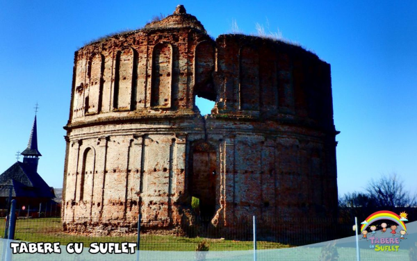
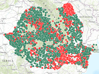

/ Scoala Tabere cu Suflet / Lectia de Istorie
/ Scoala Tabere cu Suflet / Lectia de Istorie

"Cine isi uita trecutul este condamnat sa il repete" - Jorge Santayana
 |
| Click pe harta pt a mari |
Arheologie
"Uitandu-ne pe Harta cu siteurile si monumentele de pe Teritoriul Romaniei gasim o multime de locuri surprinzatoare! Asa am aflat despre uimitoarele civilizatii care au trait pe malurile raurilor din Campia Romana, am vazut Argedava - dava marelui rege Burebista, si am descoperit ca Bucurestiul a fost locuit cu mii de ani inainte de 1459, data atestarii sale!" [...] "Avem o tara plina de vestigii!..."
Repere istorice
Se spune ca Istoria este cea mai frumoasa poveste. Am putea spune ca este mai degraba o tesatura de povesti, fiecare purtand in faldurile sale cate un mesaj ce transcende timpul. Si ca are darul sa tot revina pana cand ii deslusim toate talcurile ascunse.
Iata cateva repere ale Istoriei care ne pot ajuta in demersul nostru, oferindu-ne sansa de a ne intelege trecutul, de a ne trai prezentul si de a ne construi viitorul!